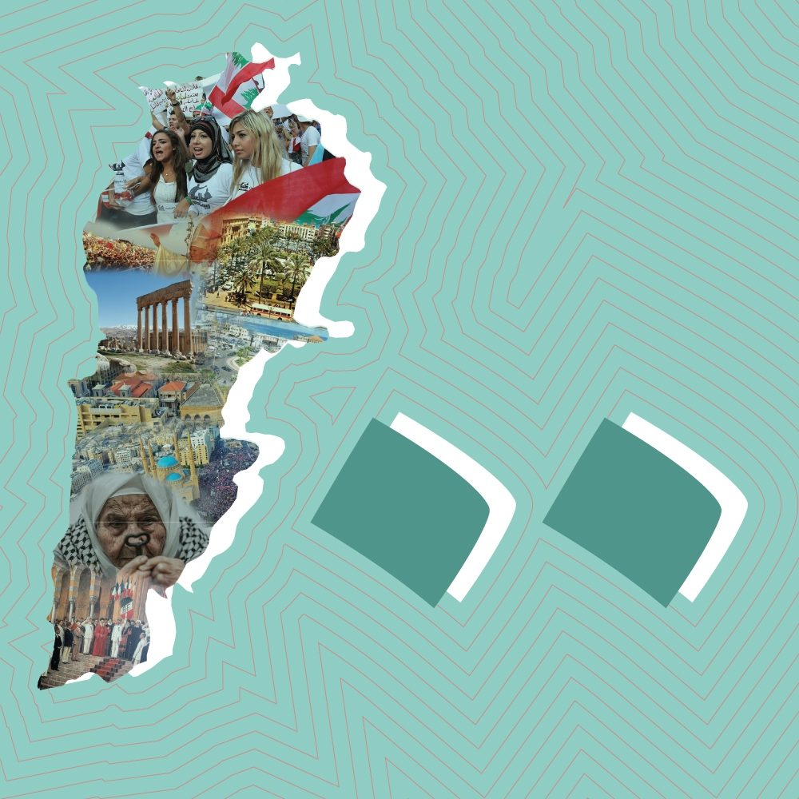
ليك، إذا بتسألني شو أكتر مشهد علّق براسي من أيام حرب تشرين 2024، ما رح…
ليك، إذا بدي إحكي عن "نجيبة"، عنجد الكلمات ما بتكفي. وقت اللي بلشت الحرب وعرفت…
مرحبا نادي ألوان، أنا ناتالي خالد من ببنين عكار، مدرستي TS المنيارة. لما بلشت الحرب…
أهلاً فيكم، ومشكورين من القلب جمعية أديان وبرنامج ألوان اللي ثانوية حاصبيا الرسمية فخورة إنها…
أنا حسن مدلج من الجنوب، وتحديداً من ضيعة بتعقّد اسمها كفررمان. كنت عايش أنا وعيلتي…
أنا إيلي كاشي، عمري ١٥ سنة وبصف الـ Seconde. بـ ٢٠٢٣، كنت عايش بضيعة بتعقّد…
مرحبا، أنا جلنار محفوظ، عمري ٢٥ سنة. بهيدي الحرب نزحت من الضاحية، وبما إنها مش…
أنا علي، شاب عمري ٢٢ سنة من الجنوب. قصتي بتبلش من الـ ٢٠٢٤، لما هجم…
قصة زينب وعلي من بنت جبيل مش بس قصة حرب، هي قصة وجع مبلّش من…
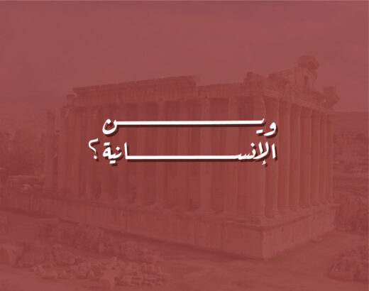
النبع بتطلّ عليه بناية طابقين، وكان في ناس عم يتفرجوا عالزلمي من الشبّاك، وما كانوا…
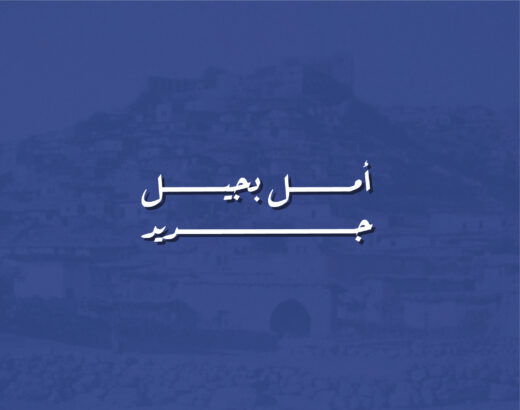
أملنا مرتبط بجيل جديد واعي، جيل بينبذ الطائفيّة، وبيحبّذ التوافق.
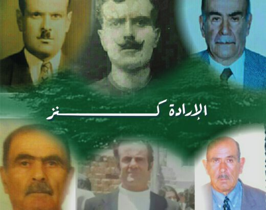
لبنان أخد نصيبُه من هالحرب، وصار فيه مجاعة قويّة بسبب إقفال المرافئ، وكمان المعابر البرّية.
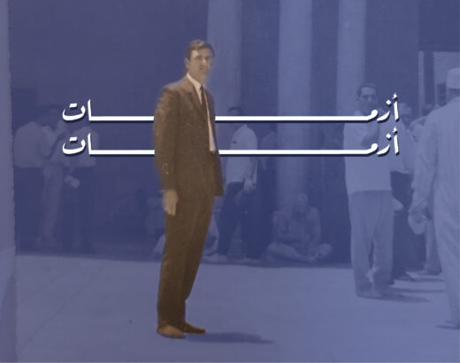
القصف المدفعي وقصف الطيران كان يوحيلنا إنُّه رح يخرب لبنان وما يعود في لبنان نهائيًّا.
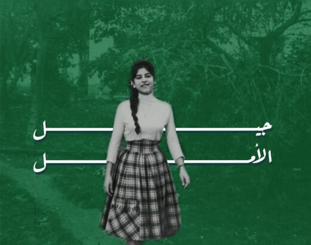
كنا نقعد بالملاجئ وننطر تا يخفّ القصف لنروح عالفرن ونجيب ربطة خبز للولاد.
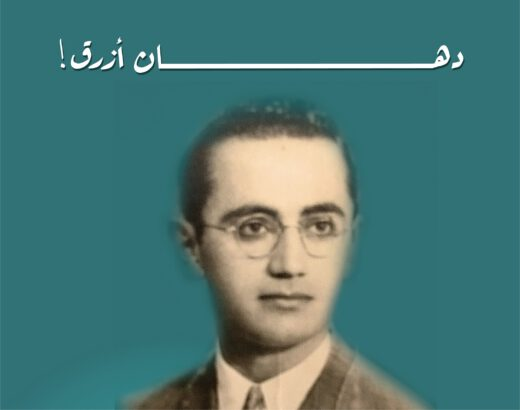
يا منطفّي الكهربا يا مندهن القزاز أزرق، منشان الطيّارات ما تشوفنا.
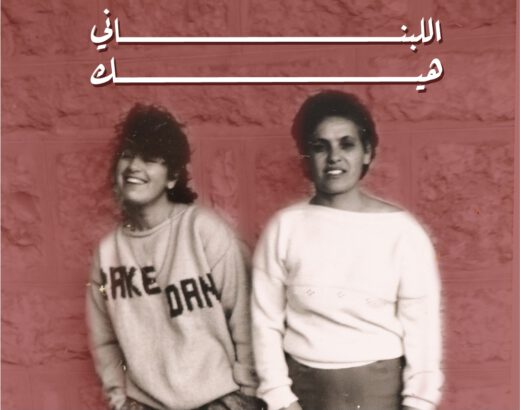
اللبناني شو ما يصير معُه مشاكل وحروب، بيطلع منها، وبيرجع لحياتُه، وما بيفقد الأمل.
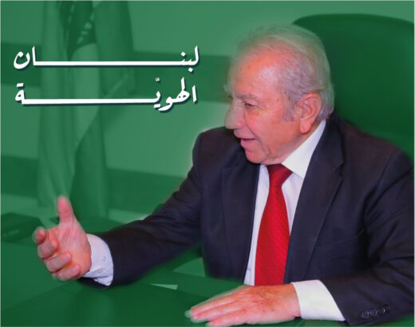
تعرّضت لأزمة قلبية قويّة، ونقلوني لمستشفى عين وزين، ويمكن الحياة فارقتني شوي.
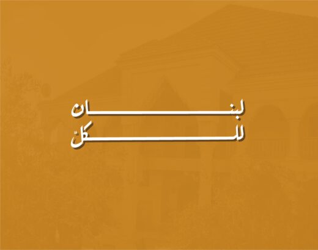
كلّن جيران من كلّ الطوايف، بيحبّوا بعضُن، بس الحكّام بيحرضوهن عا بعض.
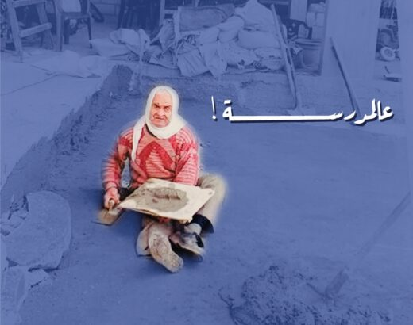
رح خبّر خبريّة زغيرة شو كانوا يعملوا فينا ببداية الاحتلال.
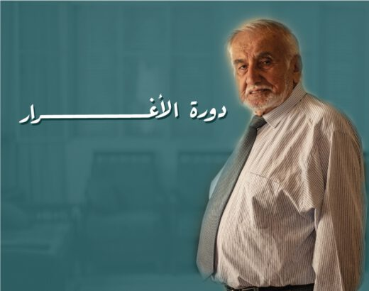
كنّا مبسوطين لأنُّه كان في نظام، والبيت اللّي .ما فيه نظام ما فيه حياة
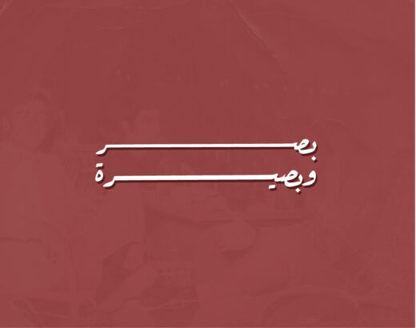
فجأة بيدعس شب معنا عا لغم أرضي وبينفجر انصبت بوجّي وفقدت نظري بهيداك الوقت.
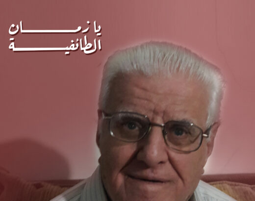
من نكد الدهر، لمّا يصير إسمك تهمة، هويتك تهمة، وطايفتك تهمة.
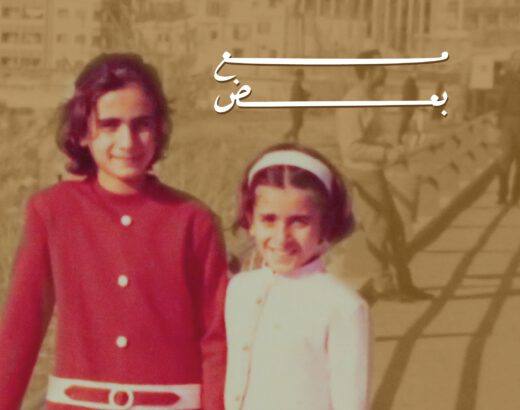
كنّا ندرس كلّ السنة، وبالأخير يقولولنا التغت السنة بسبب الحرب.
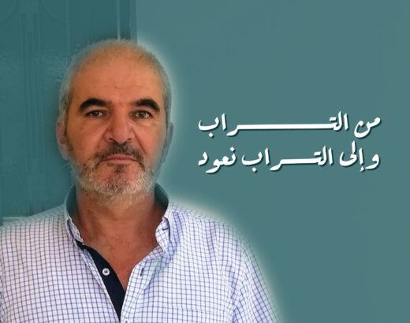
تعرّضت المنطقة لعدّة هجومات من قبل الأحزاب، ووقع عنّا ضحايا.
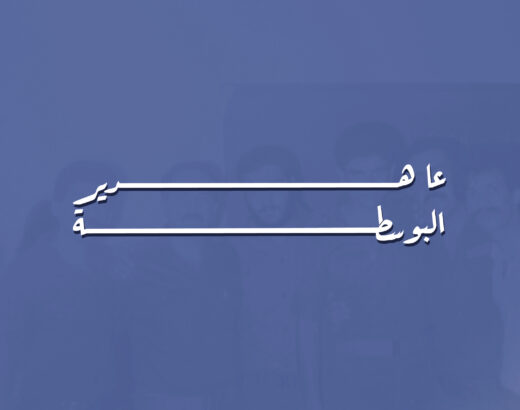
أخدت الوالدة عالأشرفيّة، جمعة ما قدرنا شفناها. وعذاب وزعل ورصاص وقذايف.
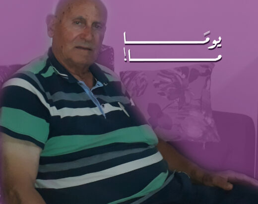
كل هيدي الأمور وصّلتنا لوقت الناس بدّا مصرياتا يللّي حطّتا بالبنك.
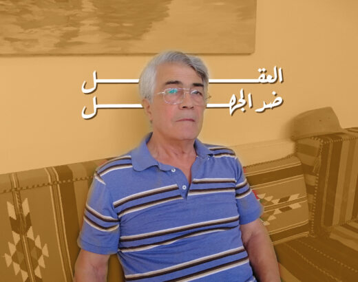
انقلبت هذه المطالب إلى فِتن ما أدّى إلى حرب أهليّة استمرّت لسنة 1960.
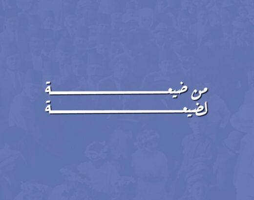
بعتوا لإبني تا يجيب، صاروا يقولوا ما تعطونش هودي مهجّرين شو بدكُن فيهُن.
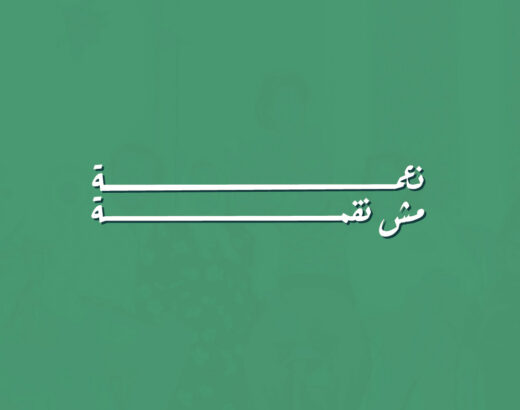
كانوا الناس متل الجراد، كلّ واحد كان يروح عا منطقة.
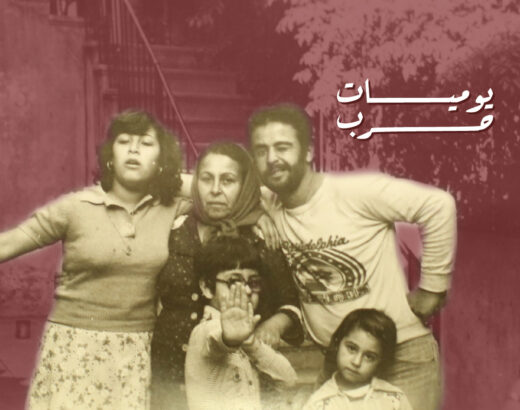
قمنا على شو خبرية، إنُّه بدّن يفوتوا يقتحموا النبعة ويدبحوا العالم.
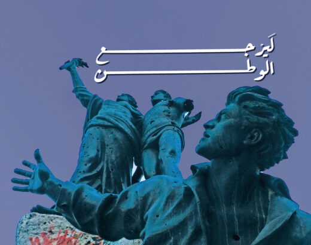
أقسى شي عاشته عيلتي كان فقدان خيّي اللّي مات بسبب القصف، وهالشي ولا يمكن يتعوّض
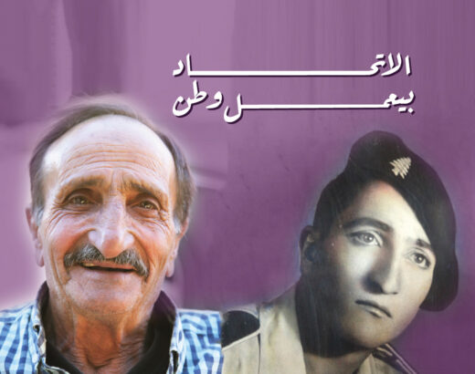
أزمات بنزين، أزمات غاز، ويصير في احتكار وغلا بالأسعار، بس كان في مصاري مع العالم.
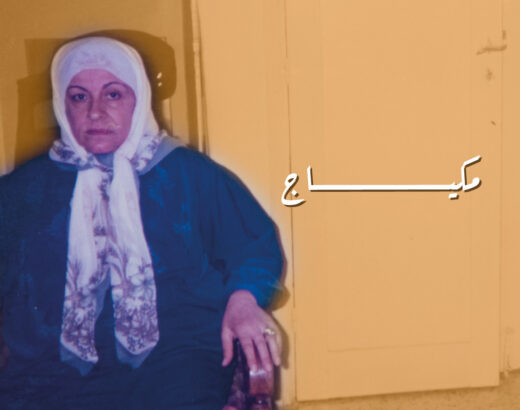
صار وجّي أصفر، فا عملتلي مكياج عشان الأحزاب اللّي عاملين حواجز ما يشوفوني خايفة.
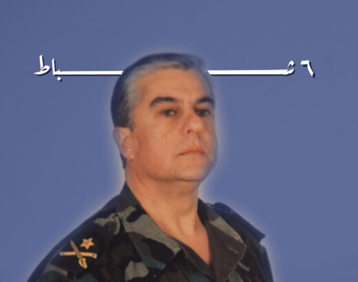
كانت الخسارة كبيرة. مات كتير من العسكر يللّي قاوموا للنّفَس الأخير.
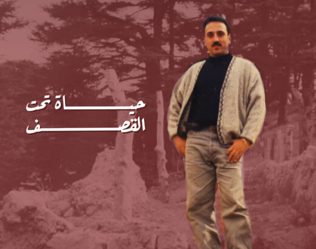
من دون سابق إنذار، بلّشت قذايف الهاون تنزل متل الشتي هون وهونيك.
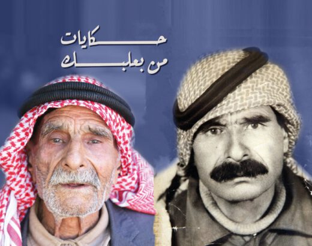
انقصفت المقرّات وانقصف بيت لآل الرفاعي، بعد ما عرفوا إنُّه مقرّ اجتماعات.
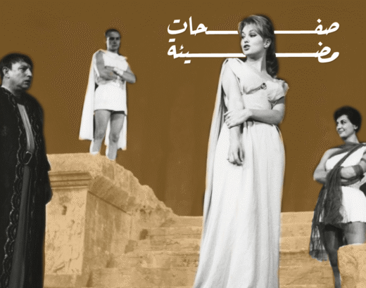
الشعب اللبناني شعب متعايش، ولبنان مميّز بحضارته. هوّي بلد اخترع الأبجديّة ونشرها حول العالم.
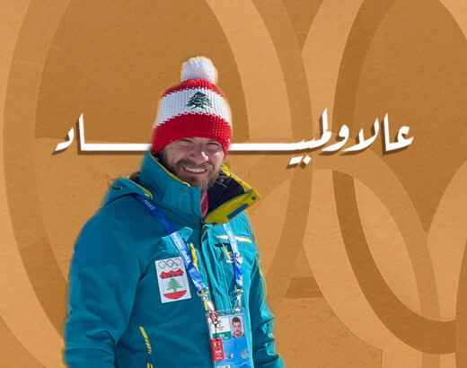
وصلت لخطر الموت، تكسّر كل جسمي، وبقيت بالتخت ٣ أشهر مزروب بالأوضة
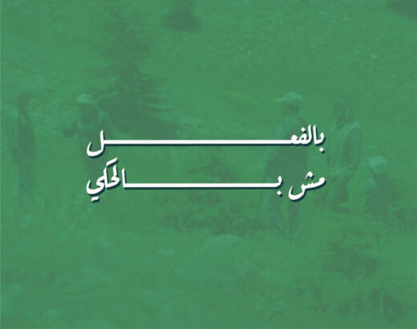
عيب علينا نحنا إنُّه نكبّ زبالتنا بالجنّة يللّي عايشين فيها.
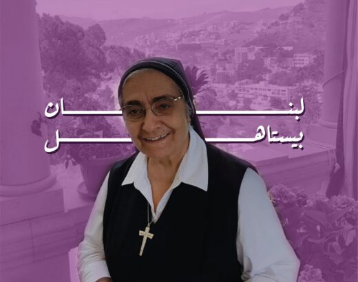
منيأس شي؟ أكيد لاء، لأنُّه إلهنا إله الرجاء والأمل، وشبيبتنا هنّي ولادنا وهنّي أملنا الوحيد.
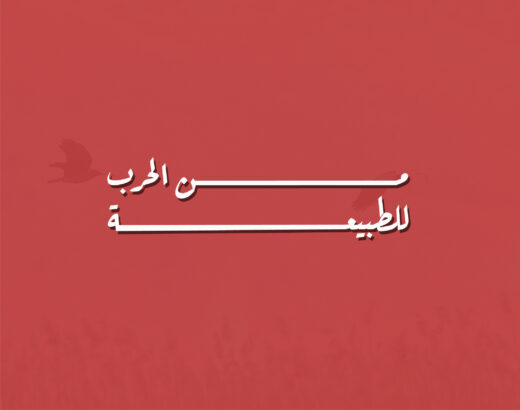
قرّرت انتقل من الصورة اللّي كلّا دم وقتل وعنف، للطبيعة اللبنانيّة.
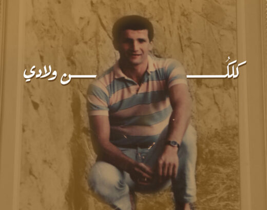
ريتو ما حدا يشرب من هالكاس، ونشالله العالم كلّا تحبّ بعضا.
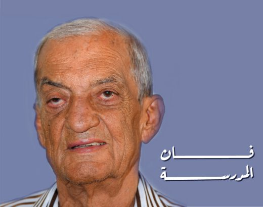
بحروب الكبار، الطفولة ما إلها ذنب. الطفولة لازم تتقدّس.
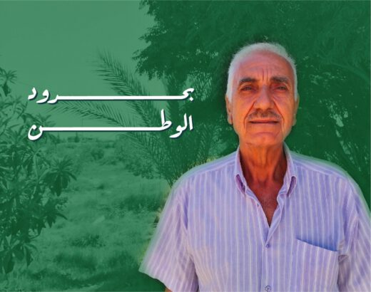
أنا ورفقاتي، لا أكل ولا شرب، وبالعتمة مطمّشن، وسيطروا عا سلاحنا وعلينا من كلّ النواحي.
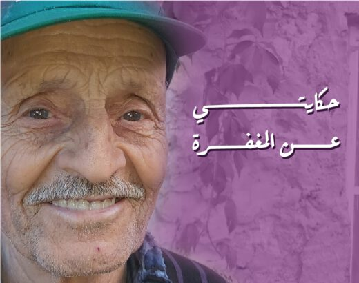
فقلتلُّن: لو بدّي موت كنت متت بقرطبا مكان الحادث، وما كانت أنقذتني العدرا.
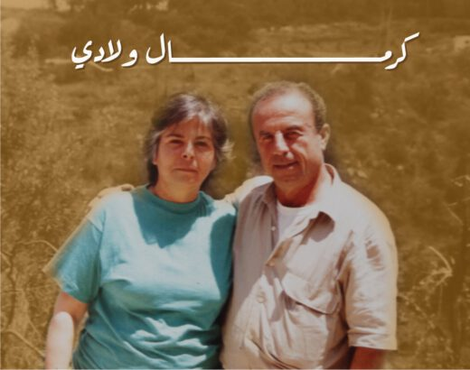
نكون قاعدين، وفجأة نسمع قواص وقذايف، فدغري ننزل عَالملجأ.
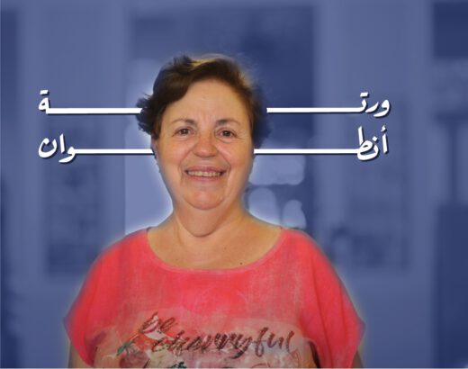
مرقت عا لبنان. حرب ما خلّت حدا ينام ببيتُه، ولا يتهنّى بعيشتُه.
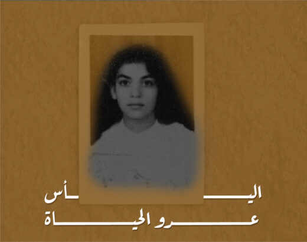
عصّب الدكتور لأنُّه حسّ إنُّن عم يستغلّوا إنتاجُه الفكري.
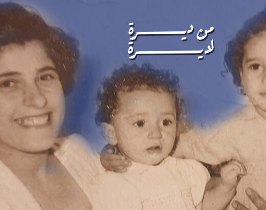
أهل الضيعة خافوا وطلعنا كلنا من الضيعة حطّينا غراضنا بالسيّارة ومشينا عا زحلة.
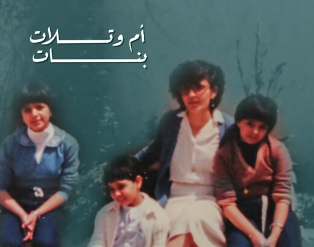
الغصّة كانت بقلبي إنّه ولادي بعاد عنّي، وما بعرف إذا عم ياكلوا.
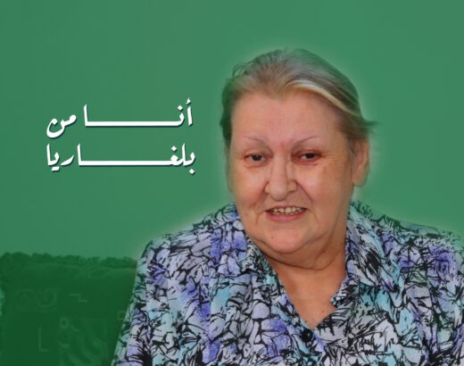
ساعة نتضحك، ساعة نبكي، فزعانين، قاعدين وناطرين، ليوقف القصف وكل مين يروح عا بيتُه.
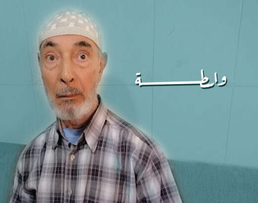
وهالحروب بتصير بسبب مصالح خاصة لخدمة دول تانية، بيتدمّر البلد وبيضيع الشعب.
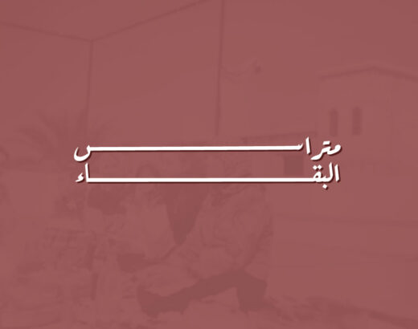
كنّا شي 12 مقاتل، وهنّي كانوا مش أقلّ من 25 مقاتل، وقدرنا نوقّف الهجوم.
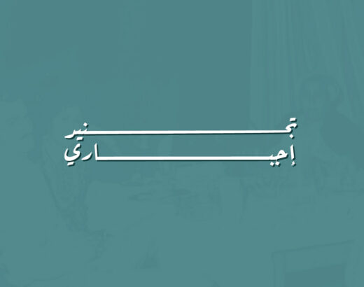
ركضوا كلُّن وقالوا هيدا الزلمي يمكن مات، وأنا ما صرلي شي، انخزقت البدلة شوي.
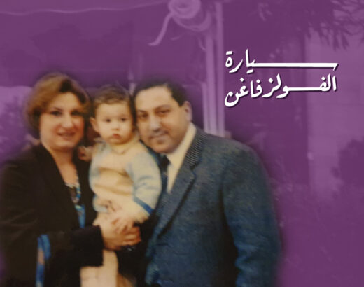
الشمس ما توصل لعنّا، وصوت الطيران والقنابل هوّي الوحيد اللّي نسمعُه.
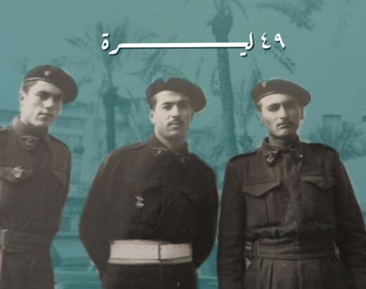
قالتلي: يا إمّي ما في أكل. قلتلّا طب حطّيلي خبز وزيتون. قالتلي: ما في خبز.
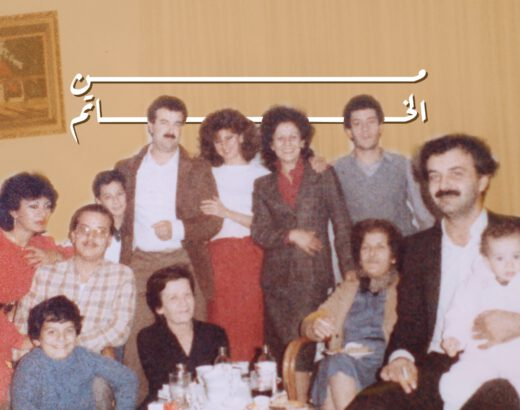
قصة جوزيف عبد الساتر توثّقها التلميذة جنى عبد الساتر من مدرسة سيدة المعونة الدائمة -…
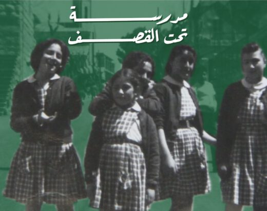
كنّا نتخبّى متل الفيران بالزوايا، يفوت علينا شظايا عالبيوت، ننطر تا يخلص القصف تا نطلع.
صرنا نطعميهن زوم عدس، مجدرة، من هالمأكولات اللّي تطبخا المرا.
لمّا رحت جيب أوّل نقلة من المصابين، شفت بيتي عم يحترق، وفضّلت جيب الجرحى وساعدُن.
أنا إبكي وهوي يبكي وإجت مرتُه كمان عبطتني. تلاتين سنة بعاد عن بعضنا!
نحنا وزغار، ما كانوا يشرحولنا أهلنا هالإشيا يلّي هلّاء عم نشرحا لولادنا.
مبدأي الإنسانية والعلمانيّة وعدم الطائفيّة وعدم المذهبيّة.
فتحت الشبّاك تا شوف من وين الصوت، وبتنزل قذيفة تحت الشبّاك دغري.
هالحادثة ما بنساها بحياتي كلّا، وبعدنا لهلّاء صحبة معُن، وبعدُه بيتُن بعيتات.
الصبي جايي من شمسطار مسافة 35 كلم حامل سطيلة لبن. هيدي بعد بتصير اليوم؟
كانت العالم تروح مشي ويحملوا الجهاز عالهودج عالجمل وهيي يركبوها عا فرس.
أنا بيتي معمرُه بتعب وعرق جبيني، أنا ما بدّي أقعد هون، بدي إرجع على بيتي.
كنت دقّ الكبة عالبلاطة، وتجي جارتي الأرمنيّة تقلّي: شو طيّب الأكل من تحت ديّاتِك.
جاري المسلم اهتمّ ببيتي، وقفّل البواب لمّا حاول الحراميّة يسرقوا بيتي.
ولا مرّة أثّرت الحرب على علاقاتنا مع أصحابنا يللّي عالميلة التانية من خطّ التّماس.
قوّصه بنصّ دين قلبه لأنّه ما ركع. يا ريته ركع. لأنّه بمَوْتِة خيّي دمّر عيلة.
يلّي أنقذنا هوّي السيّد موسى الصدر، كان بالأشرفيّة وقطّع الناس من النبعة للمنطقة الغربيّة.
راح وقتا ضحايا حوالي 375 شخص ببحمدون بس، فاضطرّينا نهرب صوب دير القمر بالشوف.
البنت فكّرناها ماتت، فا حطّيناها تحت ليمونة قدّام بيت عديلي.
ما تخافي، يا منعيش كلنا سوا، يا منموت كلنا سوا. يعني سوا عالحلوة والمرّة.
وأني أنطر وأنطر، تأخر الوقت وما إجا خيّي. تعجّبت، ورجعت لحالي!
هيدا رجال الكفيّة، كان فيه يقتلني، بس عرفني، وعرف إنّه في خبز وملح بيناتنا
ولو ما حطّت وجودا كلُّه سوا بهالمدرسة تبع البنات، المدرسة كانت فشلت.
وجبت مكنة الخياطة من بعد ما كان انصاب البيت بالأحداث واحترق قسم منّه.
لما بقول عذاب كلمة عذاب كتير زغيرة قدّام يللّي مرقت فيه، بس كان عندي أمل.
ولادي كانوا يضلّوا خيفانين كلّ الوقت، وأكتر شي بنتي يللّي ما كانت تقدر تنام باللّيل.
ما قدرت فكّر سافر، وضل عندي أمل إنّو بكرا بتروق، إذا مش هالسنة السنة الجايي.
كانوا الناس يجوا لعندي يقولولي وين سلاحاتُه. انتبهي لسيارتُه.
راحت باعت محبسا، يعني الرباط الزوجي تبعا، باعته وجابت الغراض تبع المرصبان.
ما كنّا نحسّ بالجوع. بس كنّا نخاف إنّه معقول شي نهار نبطّل نتعلّم.
حسّيت بشي مش طبيعي بصدري، فرحت عند الحكيم واكتشفت إنّه مرض خبيث.
قلّي: في عندكن عميل هون. وبلّش واحد منّن ينبّش بالخزانة والجوارير.
من الأحداث اللّي بدّي خبّركنن ياها، نحنا لمّا تهجّرنا، تهجّرنا من دون بطّانيّة ومخدّة وفرشة.
لمّا انصبت شفت الدم، بس ما حسّيت بالإصابة، فكّرت جوزي اللّي نصاب.
كمان صرت وزّع طحين عالجيران، يعني ما إلَكش قلب ولادك تطعميهن والجيران بلا أكل.
قلتلُّن شفت مشروع تزلّج حلو كتير بأوروبا، وأنا مستعد جيبُه لهون ونعمل واحد بالأرز.
كنت جريء وما خاف وقت القصف نحمل غراض العالم ونركض وراها وننزل معن عالملجأ.
كانت إذا شي سيّارة مرقت يقنصوا عليها أو يقصفوها بالنهار.
وقّفني حاجز من الشباب و كانوا ملتّمين وطلبوا منّي هويتي.
فجأة بتوقع قذيفة قدّامنا، ما عدنا قشعنا شي من الغباير.
وكواحد من المعتقلين السابقين بالسجون السوريّة، مرّيت بكتير من المعاناة خلال الاعتقال.
خسارة الأب بتسبّب الانكسار لأن الأب هوّي أساس البيت.
بقبرص الحياة حلوة، والولاد مبسوطين، كلّن بالمدارس، اضطرّينا نحطّن بالمدارس عا أساس إنّن بيتسلّوا شوي.
كلّ الشعب انقسم لطوائف وأحزاب وأنا منّن. يعني أنا فتت بحزب.
الجبان ما بيقدر يسامح، ما بيسامح إلّا اللّي قلبه كبير ومؤمن وكريم.
بيني وبين الزبالة قصة حبّ؛ الناس بيشوفوَا مشكلة، أنا بشوفا مصدر إنتاج
في سنة عقصتني الحيّة بموسم الدخّان، والموسم كلّه راح ما طلع منّه شي.
عرفوا إنّا وصلنا عا بعلبك، ناس أوادم، قاموا جابوا كميون مليان، فضّوا بيتُن وجابولنا ياه.
بشوف واحد، شحبار أسود وزفت عا وجُّه، وقلّي: شو ما عرفتني؟ أنا بيّك.
كنّا لنجيب ربطة الخبز، إيّام نقطع من منطقة لمنطقة تا نأمّن أكل لعيالنا.
كنّا شباب ومندفعين، وكل واحد حمل سلاح وركض.
بعلمي ما في شي، بس إمشي عالطريق تنزل القذيفة يا قدّامي يا ورايي.
كنا نضوّي الشمع، وأوقات نخاف نضوّي شمعة مشان ما يقصفونا.
كان بيتنا عا خطوط التماس. ومن ورا الحرب انتقلنا عا منطقة غير لنعيش فيها.
أوّل مرّة بيمرّ عا لبنان حرب أهليّة، ما كانت حرب مع العدوّ "الإسرائيلي".
نستخدم ملفات تعريف الارتباط لتحسين تجربتك. يحق لك رفضها عبر إعدادات متصفّحك، أو تواصل معنا لأي استفسار. سياسة الخصوصية